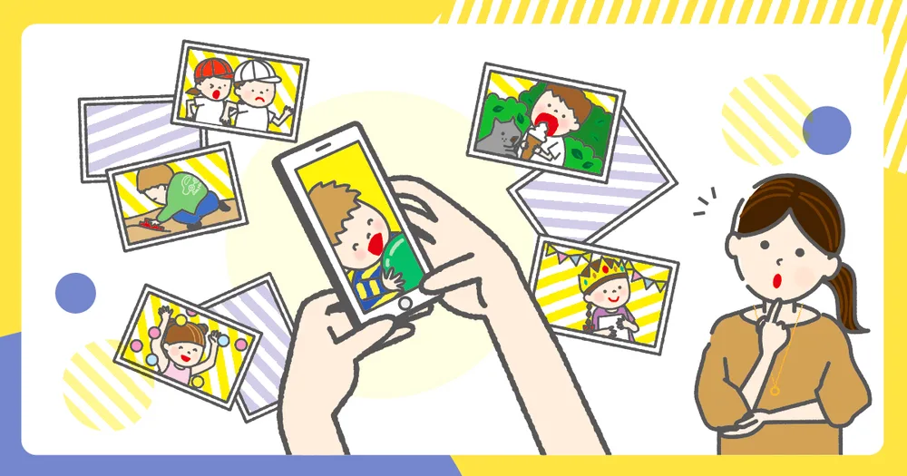
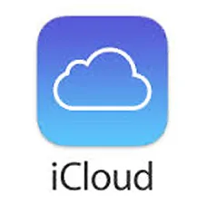

スマホの写真データ保存どうする？(iphone版)
2022.09.16

- iPhoneユーザー
- 子どもの写真管理を悩んでいる
- Amazonプライム会員
- PCを持っている
写真の保存方法
- クラウドストレージサービスを利用する
- PCに外付けHDDを繋げて保管する
- フォトブックやアルバムにする
- その他
写真の保存するためにはどのくらいの容量が必要？
最近のiPhoneは1200万画素で、ちょっと前のSE(第1世代)は120万画素。なんと10倍です!大体写真1枚あたり1〜4MBになります。 L版の写真印刷は1枚あたり約179万画素必要ですが、1200万画素は大きすぎる為ここまでの画素は必要ありません。簡単に言うと、1枚の写真あたりのMBサイズは今の半分のサイズの500B〜2MBで十分なんです！このように写真のサイズを小さくできたら保存する容量が節約できます。圧縮するためにはPCが必要なので少し手間がかかりますが、クラウドストレージサービスによってはアップロード時に圧縮できるものもあります。💬 じゃあどれくらいの容量を選んだらいいのかな？
仮に1Tの容量があれば、4MBの写真が約22万枚入ることになります。こんなに膨大の容量があれば安心だし、これ以上あっても残っている写真を覚えられません。長期保管や動画を保存することも考えてこ1TBの容量があれば、うちでは一生分足りると思っています。
💬 じゃあ1Tで調べてみよう！
ということから、1TBの容量を目安に比較してみました。
クラウドストレージサービスに保存する
スマホの写真撮影はもはや当たり前。私は子どもの写真は自分の為に撮影していて、今では大切な宝物になっています。紛失するのがと〜っても怖いです。これを防ぐため、手間なくバックアップできるサービスとして利用していきたいですが、沢山ありすぎて一体どこを選んだら良いのでしょうか？調べてみました。クラウドストレージサービスのメリット・デメリット
メリット
- 地震などの災害時に紛失する可心配がない
- スマホだけで済むので手軽に使える
デメリット
- HDDは10,000円位で寿命が大体3年、クラウドストレージサービスで3年利用すると39,000円位になり
長期だと割高 - サービスが終了すると使えなくなる
クラウドスレージサービス一比較表
| サービス名 | 月額 | メリット | デメリット |
|---|---|---|---|
|
 |
1300円 |
|
|
| 1300円 |
|
|
|
| 1300円 |
|
|
|
| 550円 |
|
|
1500円 |
|
|
HDDに保存する
💬 クラウドも便利だけど、外付けHDDの方がシンプルな気がする…
ということで1Tの容量のHDDを比較してみました！
💬 あまりPCを使わない人は馴染みがないかもしれませんが、もし家にPCがあればコスパの面から検討をおすすめします
このHDDとはPCに差し込んで使うもので、差し込むだけでアイコンがデスクトップに現れてそこにドラッグドロップして保存ができるとても簡単なアイテムです。最近ではSSDのものも出ていますが高価なので私はHDDをおすすめしています。
HDDのメリット・デメリット
メリット
- シンプル
- 最近のHDDは小型化している
- 使用時間が少ないと壊れる年数も伸びる
- 故障前に不具合が起こるので買い替え時期が分かりやすい
デメリット
- 地震などの災害時に紛失するかもと心配
- 壊れるなど自己責任で管理が必要
- PCに繋ぐので手軽さは無い
HDDの詳しい説明
素人の私が説明するよりずっと参考になるのでこちらの家電のプロのブログをご覧ください。HDDを選ぶ際のポイント
私なりにブログを見て思ったことなどをまとめました。- USB3.2（Gen1）以上を選ぶ
- 容量は1TBか2TB（上記ブログは迷ったら4TBをおすすめされていました)
- HFS＋フォーマット対応
- 大手が安心
- 今は故障予測機能付はWindows専用アプリでMacは対応していないので選ぶ基準にならない
💬 5年前の私は何も考えず倉庫用HDDをこのフォーマットにしていてTimeMachineがバックアップを取れない状態になっています (涙)
一旦PCにデータを移動してフォーマットをかけると良いのでしょうが、大変なのであきらめています。みなさまは、HDDのフォーマットには気をつけてください。
私がHDDを選ぶポイント
上記の記事や私の経験から選ぶポイントを整理しました。- mac対応HFS+でフォーマットできるもの
- ポータブルの小さいHD
- 静音設計
- 4大メーカー(サポートが安心)